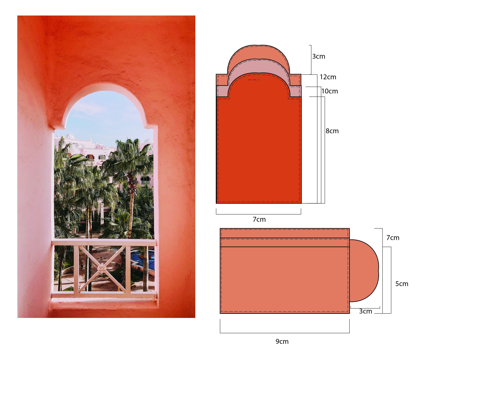
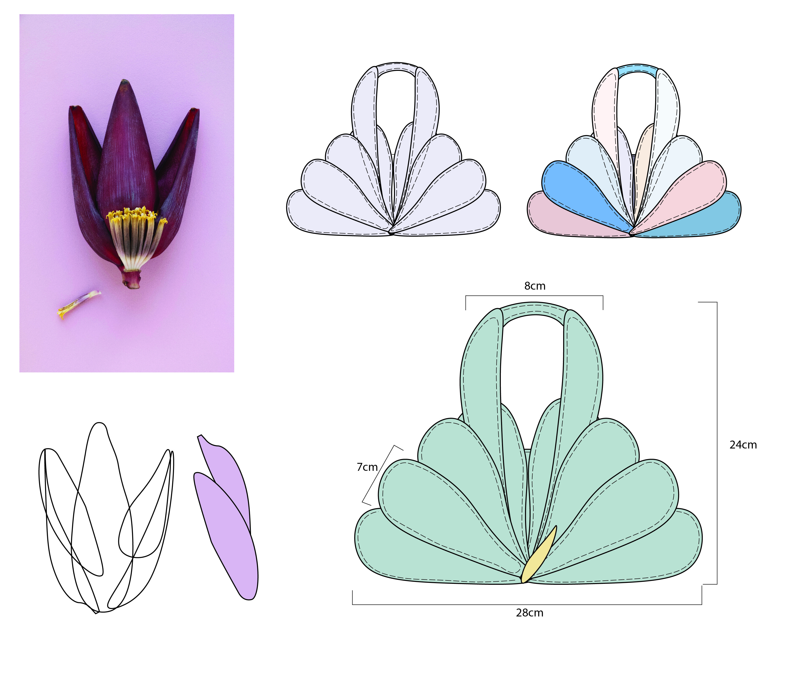
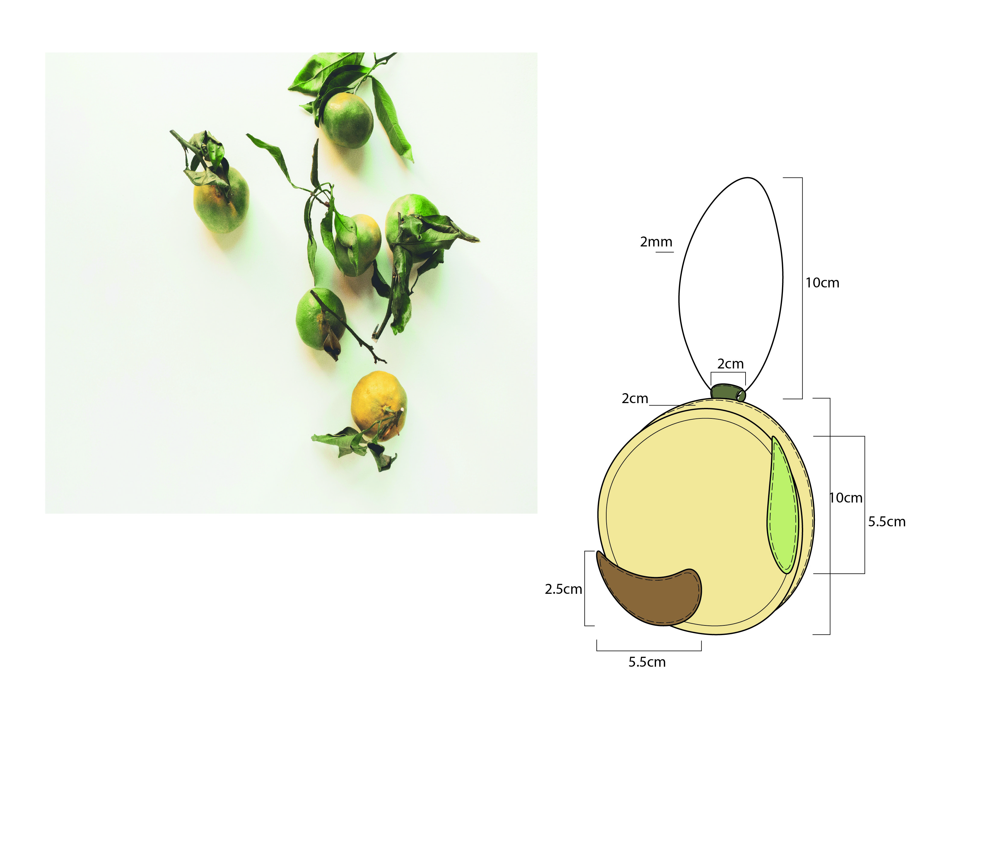
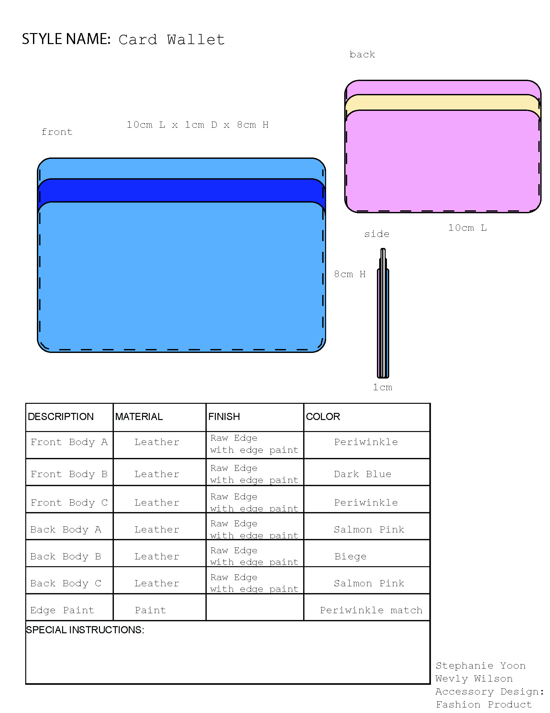
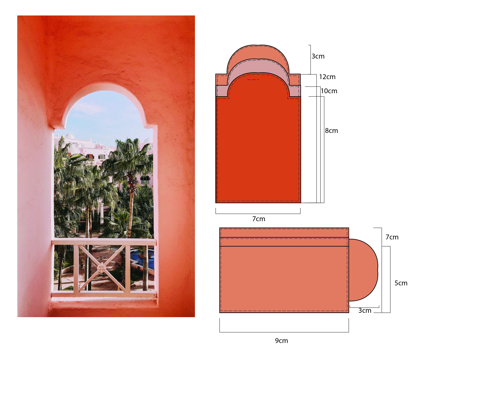
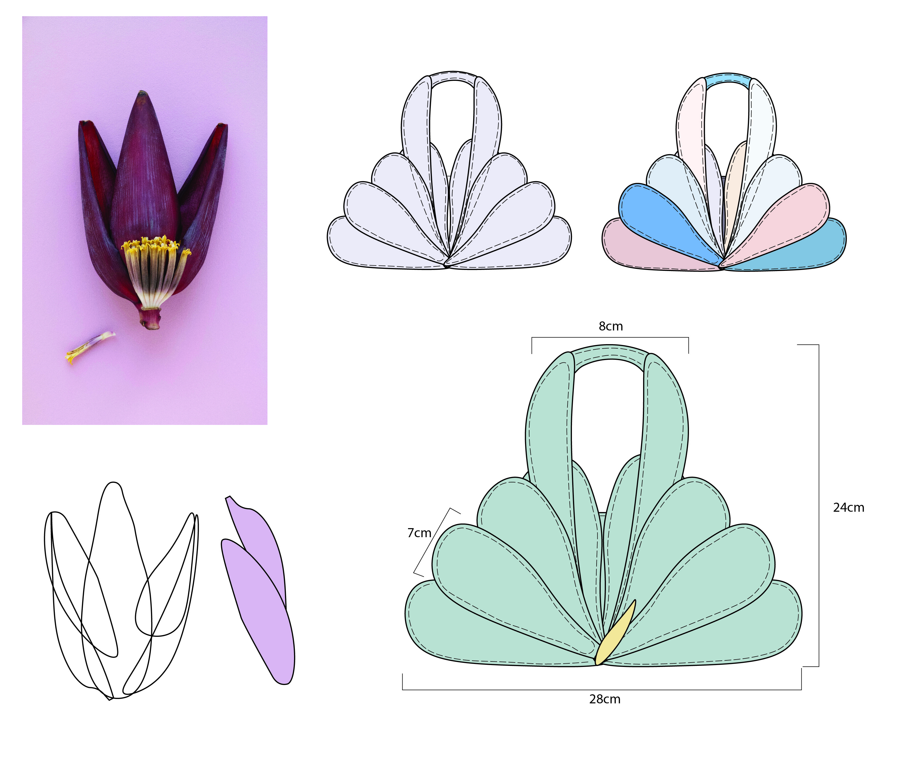
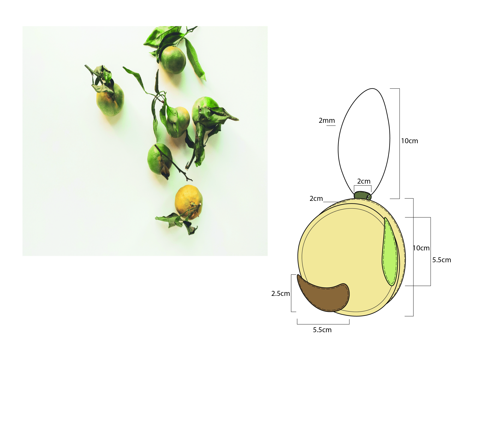
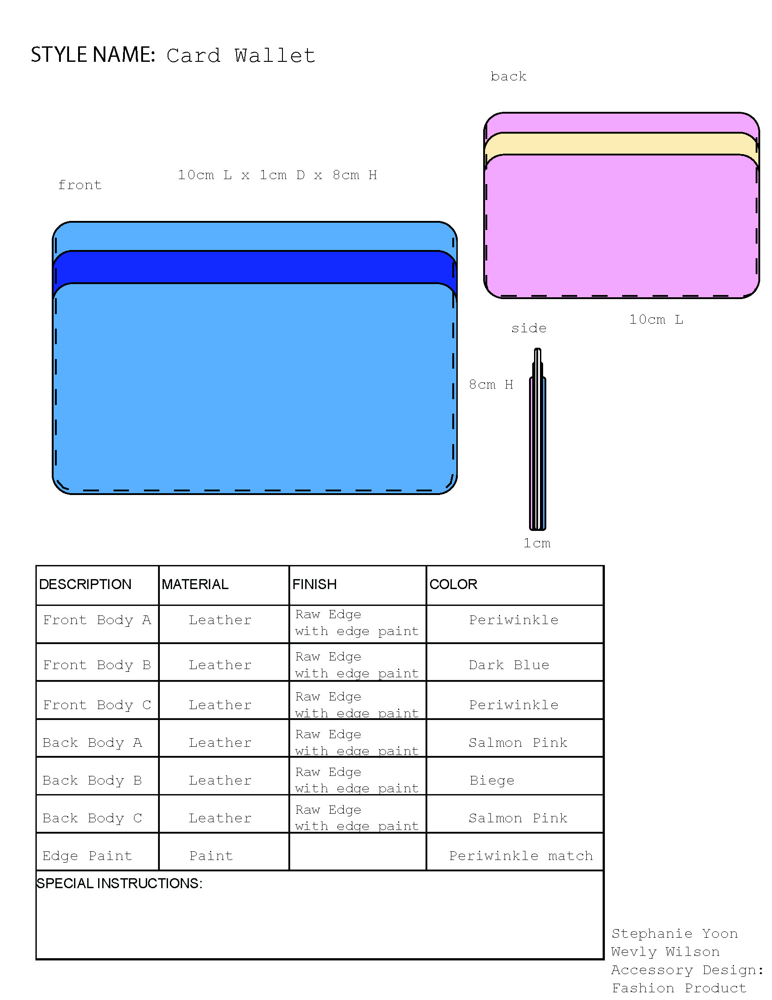

08 Accessory Design
production ideation
Through this course I was able to explore and create beautiful small leather goods. My process of design started by looking at inspiring images / themes & designing accessories based on them. With this course I was able to perfect and fine tune my design process, and apply it to other products.
 






